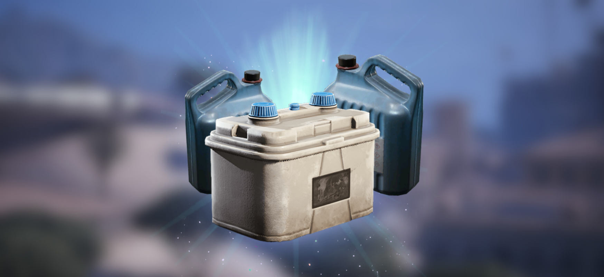

HEALTH BOARD REMINDS RAIDERS TO NOT DRINK ARC COOLANT
Local Raider hospitalized after drinking ARC coolant, thinking it was a refreshing energy drink.
SPERANZA The Speranza Health Board issued a statement today reminding survivors that ARC coolant is not safe for human consumption. The statement follows a recent spike in Raiders confusing the glowing blue cooling liquid with different beverages such as "Blue Raspberry" flavored energy drinks.
The trend, known topside as "Chugging the Blue", involves Raiders breaking open downed ARC Drones to drink the cooling fluid found inside. Despite the fluid being a proven highly corrosive and radioactive industrial lubricant, many Raiders state that it is a "natural, organic energy supplement" provided by the machines from above.
"I don't know how many times I have to say this," said Lizzy, Speranza’s lead researcher in the ARC study field. "It’s not a healing potion. It’s not 'Electro-Ale.' It is a chemical compound designed to stop a fusion reactor from melting. If you drink it, you aren't 'becoming one with the machine.' You are literally marinating your liver in battery acid."
While some Raiders claim that the coolant gives them a "Temporary speed and strength boost", medical professionals suggest that this "feeling" is actually just the sensation of your internal organs slowly dissolving.
COMMON SIDE EFFECTS OF DRINKING ARC COOLANT:
- Bioluminescence: Patients glow with an intense blue color, making stealth impossible in night raids.
- Hallucinations: Patients report seeing ARC Ticks crawling on their skin.
- Mechanical Tinnitus: Patients report hearing a high pitched noise, difficulting the ability to hear incoming ARC Fireballs
- Death: Self explanatory. Usually takes 3 to 4 days after ingestion.
Never one to miss a financial opportunity, Mayor Hallowell has responded to the crisis by introducing a new "Bioluminescence Surcharge".
Starting Monday February 9th, any Raider found to emmit a blue glow, will be charged a 10% surcharge on all elevator rides. The Mayor claims this is to cover the cost of municipal light usurpation, arguing that Raiders who emit a blue glow are "recklessly providing free illumination" and disrupting the city’s lucrative monopoly.
EDITOR'S NOTE REGARDING THE ELEVATOR MAINTENANCE FEE:Raiders are reminded that drinking five liters of coolant to "lighten your pack" before entering the elevator will not exempt you from the Elevator Maintenance Fee, that is now paid on top of the "Bioluminescence Surcharge". The weight of the fluid still counts, even if it is currently dissolving your stomach lining. The Auditor does not care about your "internalized inventory management".